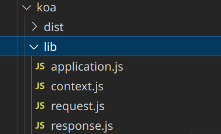

Koa2
Koa2
什么是koa框架？
koa是一个基于node实现的一个新的web框架，它是由express框架的原班人马打造的。它的特点是优雅、简洁、表达力强、自由度高。它更express相比，它是一个更轻量的node框架，因为它所有功能都通过插件实现，这种插拔式的架构设计模式，很符合unix哲学。
koa源码结构

lib文件夹下放着四个koa2的核心文件：application.js、context.js、request.js、response.js。
application.js
application.js是koa的入口文件，它向外导出了创建class实例的构造函数，它继承了events，这样就会赋予框架事件监听和事件触发的能力。application还暴露了一些常用的api，比如toJSON、listen、use等等。
listen的实现原理其实就是对http.createServer进行了一个封装，重点是这个函数中传入的callback，它里面包含了中间件的合并，上下文的处理，对res的特殊处理。
use是收集中间件，将多个中间件放入一个缓存队列中，然后通过koa-compose这个插件进行递归组合调用这一些列的中间件。
context.js
这部分就是koa的应用上下文ctx,其实就一个简单的对象暴露，里面的重点在delegate，这个就是代理，这个就是为了开发者方便而设计的，比如我们要访问ctx.repsponse.status但是我们通过delegate，可以直接访问ctx.status访问到它。
request.js、response.js
这两部分就是对原生的res、req的一些操作了，大量使用es6的get和set的一些语法，去取headers或者设置headers、还有设置body等等，这些就不详细介绍了，有兴趣的读者可以自行看源码。
实现koa2的四大模块
实现一个koa2的框架需要实现四个大模块，分别是：
- 封装
node http server、创建Koa类构造函数 - 构造
request、response、context对象 - 中间件机制和洋葱模型的实现
- 错误捕获和错误处理
koa洋葱圈模型

什么是中间件？
1 | |
以注册接口为例,路由一次经过了
userValidator判断用户密码输入是否有效。verifyUser查询用户是否已经注册(需要查询数据库)。cryptPassword通过bcryptjs插件进行密码加盐加密。register存储信息到数据库返回信息。
为什么要使用中间件？
- 中间件让代码的思路变得更加清晰，每一步干什么，通过中间件的语义化能够很好的增加代码可读性
- 提高代码的复用性，举个例子，我们在注册和登录的时候都需要对用户输入有效性进行判断，于是就可以直接用两次
userValidator。
async await 语法
async：声明异步函数。await：后面跟一个promise对象。- 如果要使用
await就需要在函数声明前加上async。
源码分析
Listen函数
1 | |
callback函数
return的是this.handleRequest(ctx,fn)
createContext如何生成ctx？handleRequest如何运行的？- 关键点，
middleware是什么？compose对它进行了怎样的封装？
1 | |
use函数
use函数关键的一步就是将fn放入middleware数组中。 所以app.use并不是马上执行，而是将函数先放入数组中。这也就是为什么use里面的中间件必须是函数，我们在app/index.js中注册使用路由的时候会调用.routes()方法，app.use(userRouter.routes())。
1 | |
compose函数
打开
node_modules我们会发现，在npm i koa的时候，装上了koa-compose这个插件
-
判断
middleware是否是一个数组(存放中间件函数) -
判断数组中每个元素是否是一个函数
-
简单来说
compose就是一个递归调用中间件的过程
index=-1这里很巧妙，用了一个闭包的技巧，执行函数后，index=i，所以index>=i时reject(说明多次调用了！)- 不断取
fn=middle[i]，如果fn不为空就执行 - 递归调用下一层
dispatch.bind(null, i + 1))一定要用bind(null)吗？这里不是单纯的递归调用，而是传入一个函数，所以必须用到bind（call/apply改变了函数的this上下文后马上执行该函数；bind则是返回改变了上下文后的函数，不执行该函数 。）- 将
下一个中间件作为next参数传递下去了(这就是为什么await next()能够形成洋葱圈模型了)
1 | |
单独处理一个问题：
Q：为什么return的是一个Promise的对象（Promise.resolve也是一个promise对象）？
A：因为我们await next()的时候，await是等待且执行一个async函数的完成，async会默认返回一个promise对象，所以这里return的是一个promise对象。我们在每个中间里面await mext()指的就是下一个中间件
1 | |
洋葱模型的流程总结
通过use传进来的中间件是一个回调函数，回调函数的参数是ctx上下文和next，next其实就是控制权的交接棒，next的作用是停止运行当前中间件，将控制权交给下一个中间件，执行下一个中间件的next()之前的代码，当下一个中间件运行的代码遇到了next()，又会将代码执行权交给下下个中间件，当执行到最后一个中间件的时候，控制权发生反转，开始回头去执行之前所有中间件中剩下未执行的代码，这整个流程有点像一个伪递归，当最终所有中间件全部执行完后，会返回一个Promise对象，因为我们的compose函数返回的是一个async的函数，async函数执行完后会返回一个Promise，这样我们就能将所有的中间件异步执行同步化，通过then就可以执行响应函数和错误处理函数。
本博客所有文章除特别声明外，均采用 CC BY-SA 4.0 协议 ，转载请注明出处！